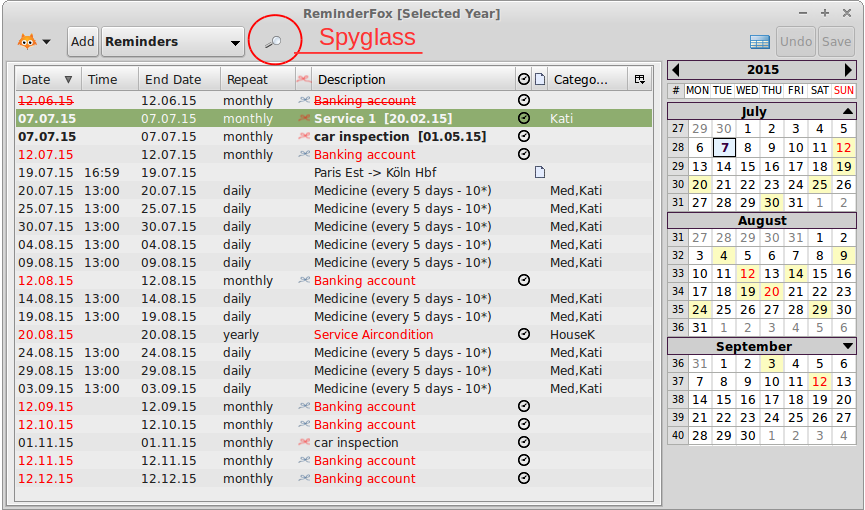

The left box is the normal 'Filter' to select with one attribute, the right drop down is the Filter/Views menu. The first parts shows time related filters, the second part holds the 'Views'.

Defining many reminders/todos with Reminderfox makes a long Main List and a Calendar with many day entries. Moreover it can be hard to see the right ones, a focus to specific events or groups of events can be hard.
Reminderfox offers 'Filter', but this let the user select only one of the attributes (Description, Categories, Notes or Location) a time. 'Views' are basically also filters, but can work with multiple attributes and can be combined with AND or OR logic.
The 'Views Editor' dialog let the user define and edit those 'Views'.
It's opened on the Menu Main Bar, if the Main Menu Bar only shows the Spyglass, a click on it will show additional elements.

The left box is the normal 'Filter' to select with one attribute, the right drop down is the Filter/Views menu. The first parts shows time related filters, the second part holds the 'Views'.
Finally there is a [Manage Views ...] which opens the View Editor
The 'View Editor' has three parts
The picture above is used to show how a specific 'View' is maintained.
From the left text box, select a 'View'; the picture above has the "Kati (m)" selected. With that the already defined criteria are shown in the 'criteria box'. Our example has two definitions:

Selecting a 'Criteria' row sets the 'Criteria Edit Row' elements, for our example 'Description' and in the textbox the string "Medicine". The text can be changed and [Edit] will write the new string to the criteria box above, also the edit row is disabled.
More criteria can be added with the [Add] button above the criteria box, also any definition (row) can be deleted with [Remove].
The definition for a "Date" has some special points to remember. Generally a 'Date' definition is always "floating" -- it's always related to the current date, the moment the Reminder Main List / Calendar is filtered with a 'Date' criteria.
Our example has "Date:1W,4W", this is read as: looking for reminders/todos with start date one week (ahead/into the future) AND four weeks (ahead/into the future) related to "today". So only reminders falling into this time span will be selected.
Selecting the 'Date:1W,4W' row will put the values into place:
The 'Criteria Edit Row' now has
Moving the cursor on a boy will open a dialog to allow selecting the date span:
The dialog for "Begin" and "End" are similar to set:
As can be seen, moving the cursor over the start/stop box will show the calculated date for the selection: our example is edited on July 7th, "1W" = one week from 'today' is July 14th. Because the "Date Span End" has [4W] and also this is related to "today" the resulting "Date Span" will be July, 14th until August, 5th.
Note: Setting one of the Date Span values to a "0" zero value will interpret the other as the "Date Span Start" and the Date Span always will start at "today".
A 'view' with multiple 'criteria' works as an AND --> The example above works like this: select all reminders/todos with the defined 'Description:Medicine' AND the defined 'Date' span.
Multiple criteria with the same attribute type work as an AND --> Two rows with separate definitions "Description:Mail" and "Description:Send" would look for reminders/todos with both keywords in the description/summary.
Multiple values for one criteria separated with an comma work as an OR --> A definition "Description:Mail,Send" would look for reminders/todos with at least one of those keywords in the description/summary.